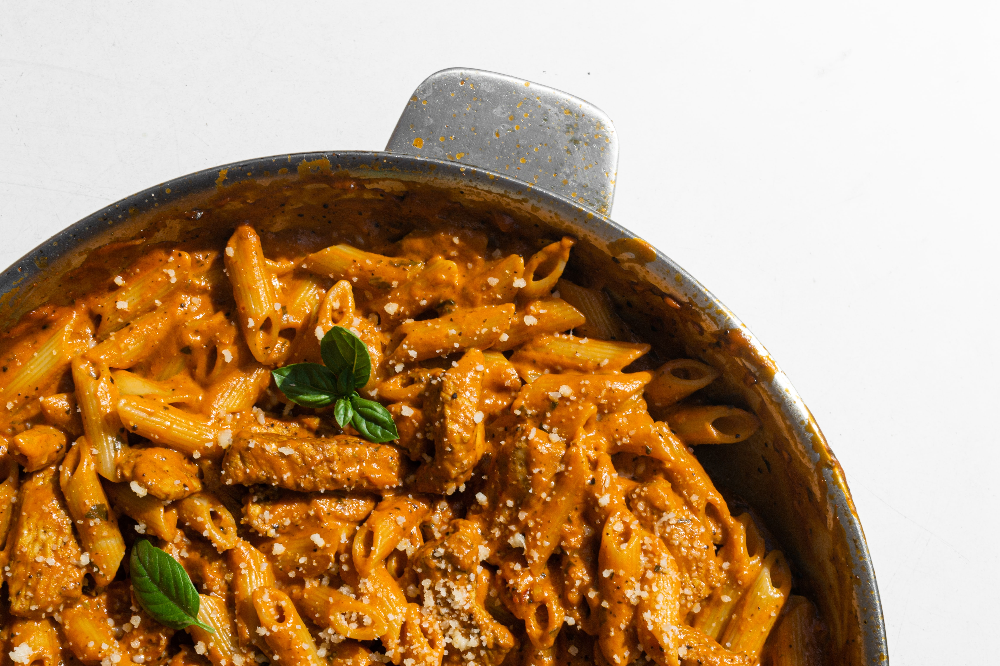

Penne with Tomatosauce

Description
Easy and Tasty
Ingridients
- Onions
- Garlic
- dry chilli
- Whipped Cream
- Tomatoconcentrate
- Red Wine
- Penne
Steps
- Boil Water and put Penne into it
- Cut Onions and Garlic and chilli (if you like spicy
- Heat olive oil in pan
- put Onions into pan
- put Garlic into pan
- drip little bit of red wine into pan and some Tomatoconcentrate
- when the onions and garlic are red and begin a little bit to burn add slowly some whipped cream and mix it with the ingredients till its creamy
- repeat this process as often as you like
- before taking the penne out of the boiling water drip some boiling water into the sauce for extra taste